Portafolio de Desarrollo de Juegos de Video donde se
detalla todo el proceso realizado para la construcción
de un videojuego, pasando por todos los procesos de
Design Thinking, desde la ideación hasta la entrega del
producto final.
Miembros:
Dilan Orlando Morales Pineda
Jonathan Javier Pibaque Ponce
Emilio Ignacio Sáenz Gómez
Cristina Victoria Tigrero Tigrero
Ideas
Para la realización de la ideación de juegos, se hizo uso de la
técnica del Brainstorming para generar un total de 61 ideas,
realizadas en dos tandas. La primera tanda reúne las primeras 30
ideas, mientras que la segunda tanda reune las 31 ideas restantes.
También, se usó herramientas de apoyo para la generación de ideas
tales como:
De las 61 ideas generadas, se seleccionaron la que a nosotros como
grupo nos pareció las 3 ideas más relevantes, tomando en cuenta su
factibilidad, diversión, facilidad de entender y posible
intuitividad.
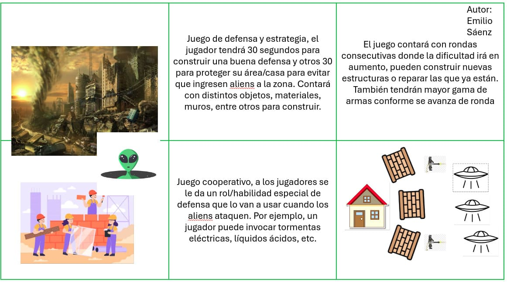
Idea 31
Se escogió esta idea ya que puede ser escalable a una gran
cantidad de personas que lo pueden jugar. El juego es de
tipo Tower Defense con temática alien, y los jugadores
podrán hacer uso del rol asignado para defender la casa. El
juego necesita de juego en equipo, estrategia en la
ejecución de los roles correspondientes.
Idea 44
Encuentra el Enemigo es un juego de salón individual cuyo
principal atractivo es la estrategia necesaria para ganar
la mayor cantidad de puntos mientras se evita que los
contrincantes disminuyan los propios. El juego puede
considerarse caótico debido a que su mecánica principal es
el 'tap', que debe usarse continuamente durante toda la
partida. Es un juego en el que se necesita tener mucha
atención y concentración para llegar al podio.
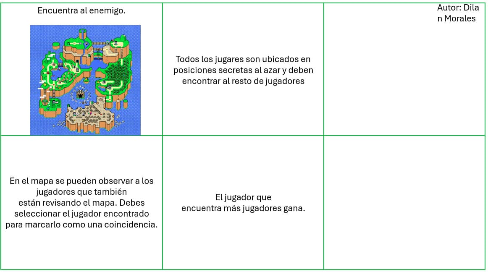
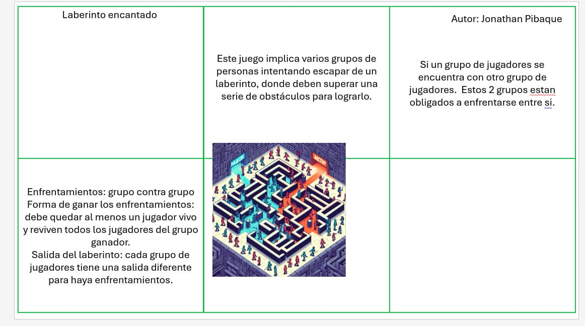
Idea 53
El Laberinto Encantado se lo seleccionó ya que su mecánica
de juego es fácil de entender, puede permitir la creación
de estrategias en los equipos y existiría una gran
adrenalina con los encuentros entre los equipos.
Storytelling
1. Encuentra al enemigo
Este es un juego de estrategia en tiempo real donde los
participantes se colocan aleatoriamente en un mapa y deben
eliminar a los demás jugadores tocando su ubicación. Los
jugadores pueden ver el mapa para encontrar a otros, pero al
hacerlo, su propia posición se vuelve visible, haciéndolos
vulnerables. El objetivo es eliminar a tantos jugadores como
sea posible, y el ganador es quien haya eliminado a más
participantes.
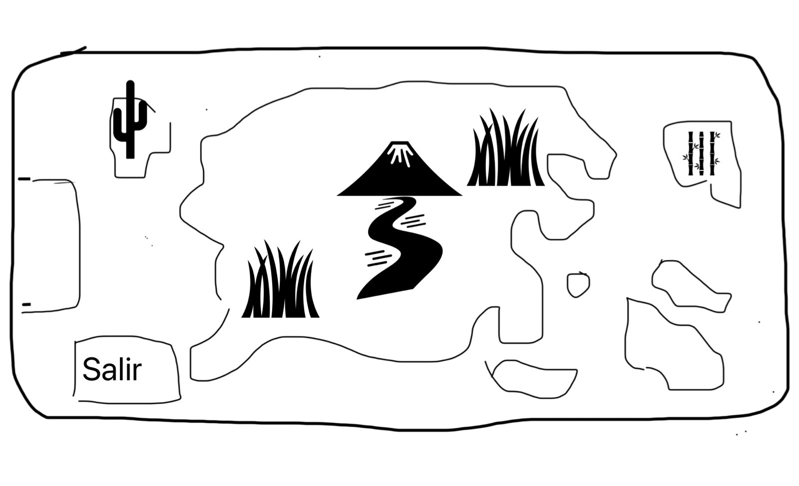
1. Al abrir el juego, se muestra un mapa generado
al azar que será usado durante la partida.
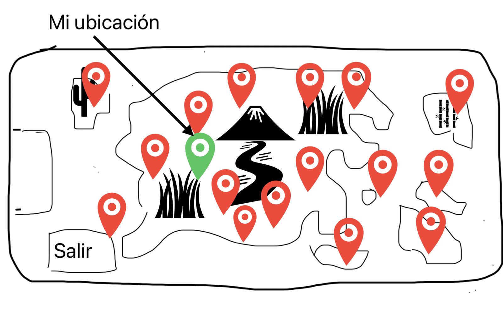
2. Cuando el juego inicia, se visualizan todas las
posiciones: los enemigos en rojo y tu posición con
un color de borde distintivo.
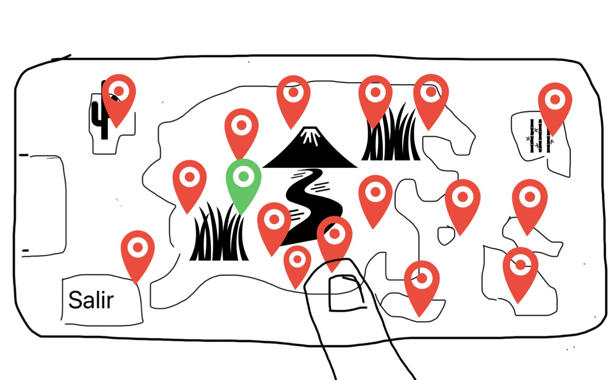
3.Para eliminar a un contrincante, debes hacer tap
en la pantalla en la ubicación del enemigo.
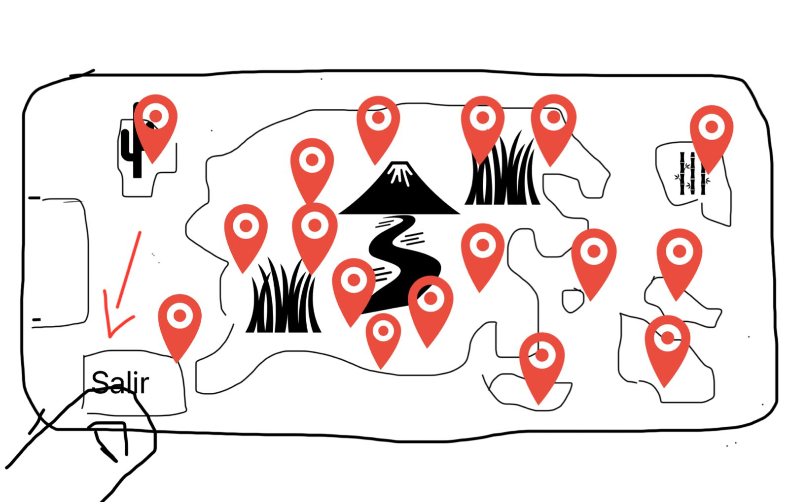
4. Para ocultarte, debes hacer tap en "Salir", lo
que hará que tu posición desaparezca del mapa.
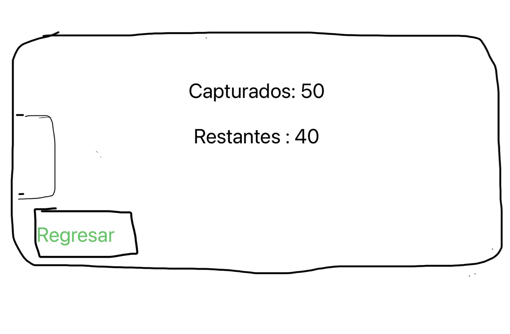
5. Un jugador puede salir del escondite haciendo
tap en la pantalla, o el juego lo regresará a la
partida automáticamente en 3 segundos.
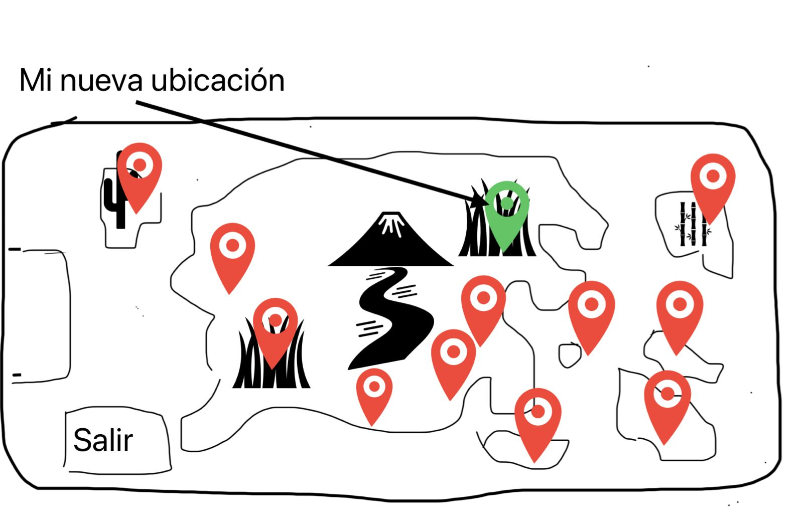
6. Cada vez que un jugador regresa al juego, el
juego lo coloca en una nueva posición al azar en el
mapa.
2. Laberinto encantado
El objetivo del juego es salir del laberinto a través de la
puerta que coincide con el color asignado a tu grupo. Todos los
jugadores conectados se dividen aleatoriamente en 4 grupos,
cada uno representado por un color y un número distintivo para
cada jugador. Si dos jugadores de equipos contrarios chocan,
ambos mueren. Además, los jugadores pueden disparar a miembros
de otros equipos. El grupo vencedor será aquel cuyo número
ganador logre completar el laberinto primero.
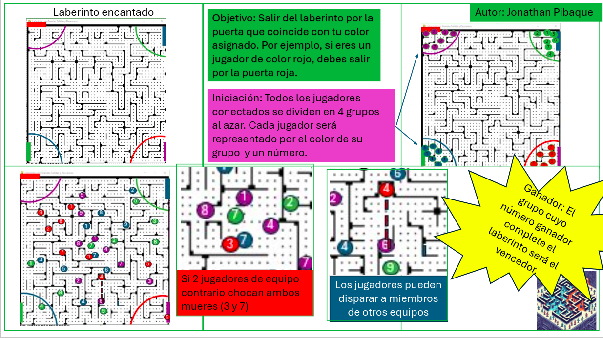
3. Defender el vecindario
Es un juego de tipo Tower Defense cooperativo que trata de
defender el vecindario contra el ataque alien que se a
apoderado del mundo, solo el vecindario es el único lugar a
salvo del planeta. A los jugadores se le repartirán 4 roles de
defensa. Cada jugador contará con un tiempo de espera para
colocar lo que le corresponde. Los jugadores lograrán la
victoria si consiguen sobrevivir los 60 segundos que dura la
invasión, pero deben tener cuidado ya que cada vez que pasa el
tiempo, aparecen más aliens y el peligro incrementa.
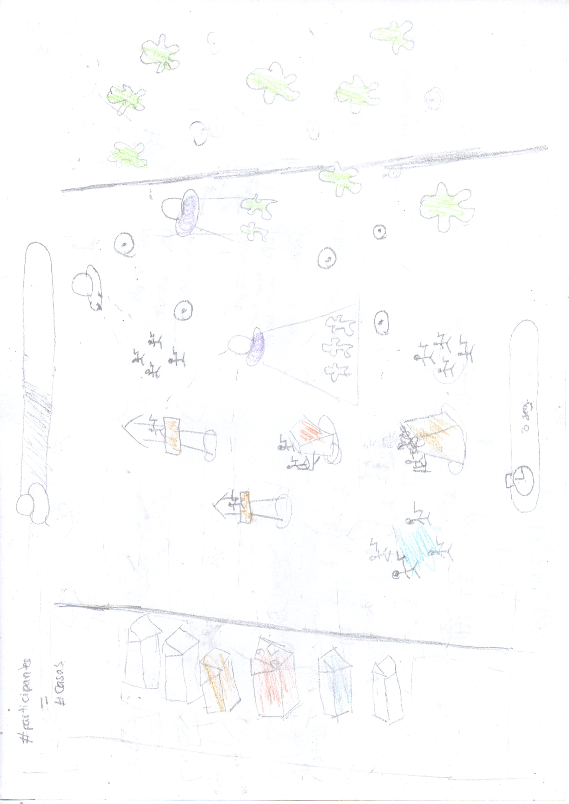
Cuenta con ciertas restricciones dependiendo del rol
que los jugadores pueden tener. En total, el jugador
tiene la posibilidad de jugar con 4 roles: Tropa de
soldados, muro, torre antiovni y minas de proximidad.
Las tropas solo pueden atacar de frente en un rango
amplio de distancia mientras esté dentro de los 180° de
visión periférica. Los jugadores logran la victoria
cuando la invasión sea exterminada al completo.
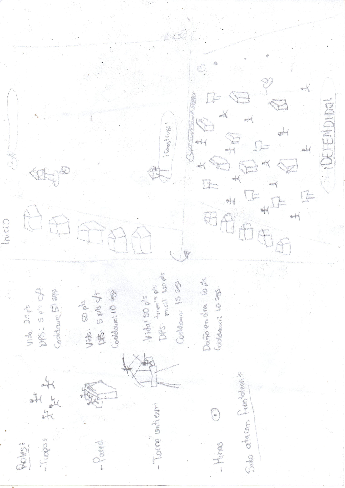
Prototipos
1. Encuentra al enemigo
Versión #1
Sala de espera donde se muestra la lista de
jugadores y el botón para iniciar el juego.
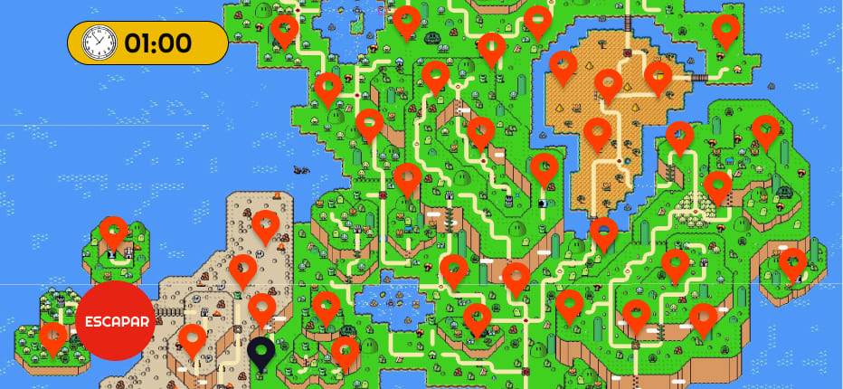
Mapa con los marcadores rojos que representan a
los enemigos, el marcador negro que representa
al jugador, y el botón de escape que permite
esconderse por 5 segundos.
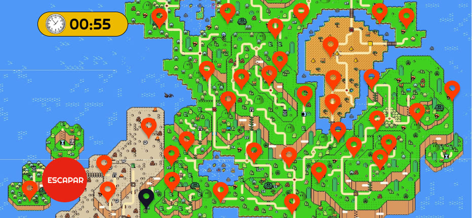
Durante el juego, los marcadores rojos pueden
moverse, ya que los jugadores pueden escapar de
su posición y moverse aleatoriamente a otro
lugar.
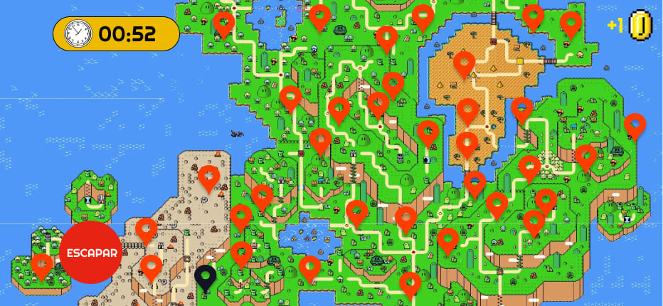
Para ganar puntos, es necesario hacer tap en
los marcadores rojos (enemigos). El punto se
visualizará como una moneda con un +1.
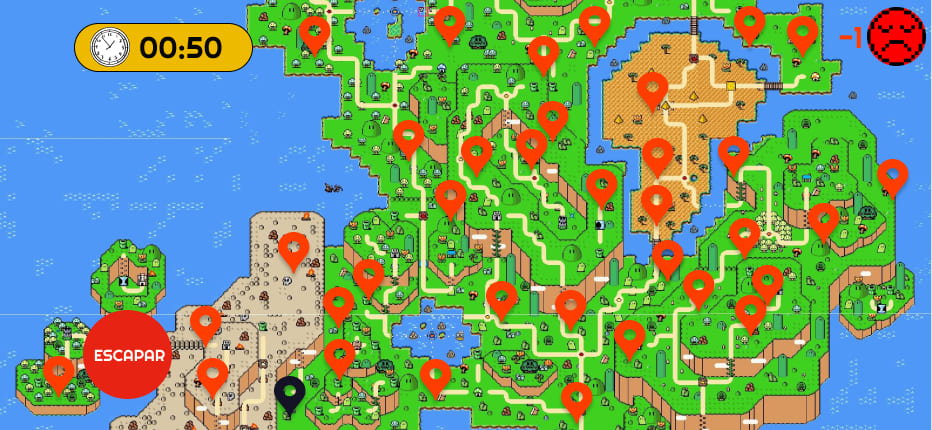
Cuando los demás jugadores hagan tap en tu
marcador (color negro), se te restará 1 punto.
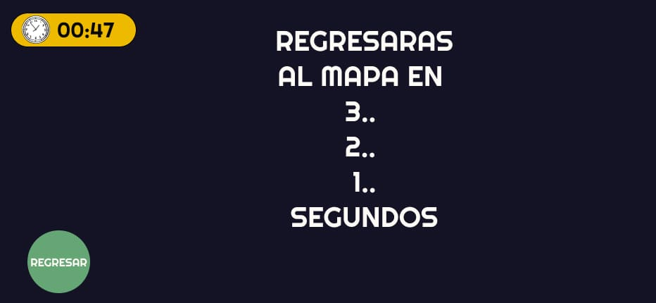
Cuando el jugador decide escapar, se llevará a
otra pantalla donde no podrá visualizar a los
contrincantes. Esto solo puede durar un máximo
de 5 segundos; de lo contrario, será regresado
al mapa. Además, puede salir antes haciendo tap
en el botón de regresar.
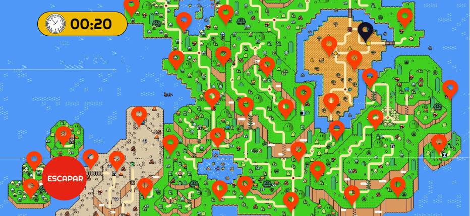
Cuando se regresa al mapa, la nueva posición es
escogida al azar.
Una vez finalice el juego, se mostrará la tabla
de resultados con los detalles de puntos
ganados, perdidos y el total.
Playtesting
Retroalimentación:
Se pierde mucho tiempo en la pantalla de
escondite.
La mecánica de posicionarse al azar le quita la
estrategia al juego.
No está muy claro cuándo es necesario escapar,
ya que los puntos que se pierden no se
visualizan claramente.
Versión #2
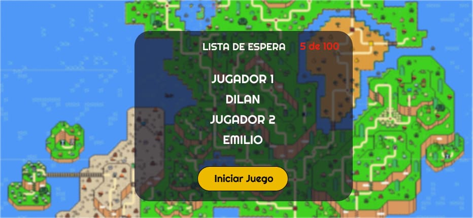
Sala de espera donde se muestra la lista de
jugadores y el botón para iniciar el juego.
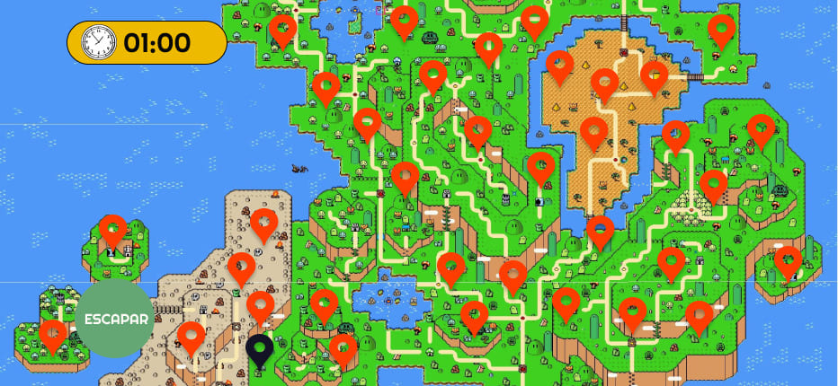
Mapa con los marcadores rojos que representan a
los enemigos, el marcador negro que representa
al jugador, y el botón de escape que permite
esconderse por 5 segundos.
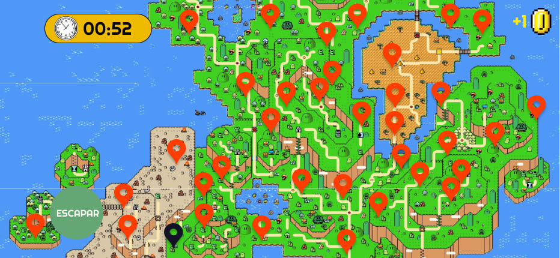
Durante el juego, los marcadores rojos pueden
moverse, ya que los jugadores pueden escapar de
su posición y moverse aleatoriamente a otro
lugar.
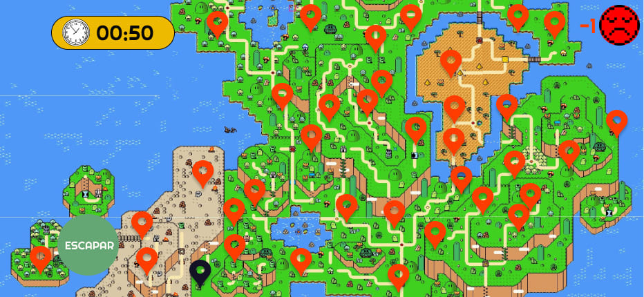
Para ganar puntos, es necesario hacer tap en
los marcadores rojos (enemigos). El punto se
visualizará como una moneda con un +1.
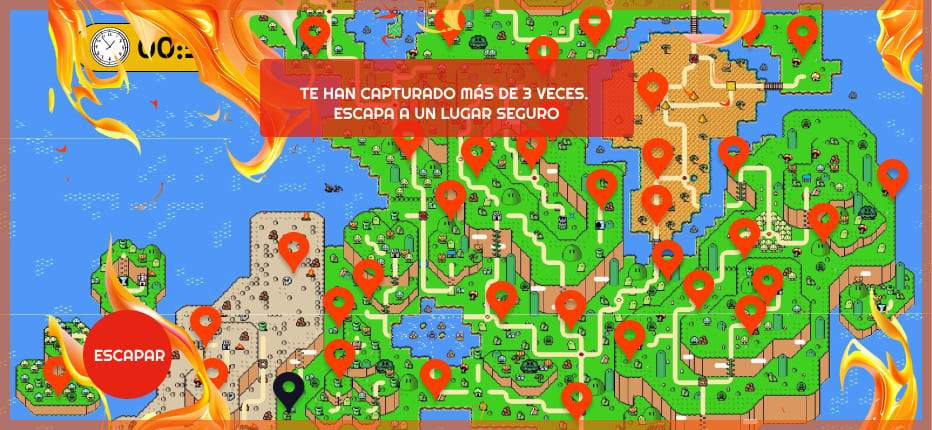
Cuando se recibe más de tres taps en contra, la
pantalla muestra bordes de color rojo para
alertar al jugador.
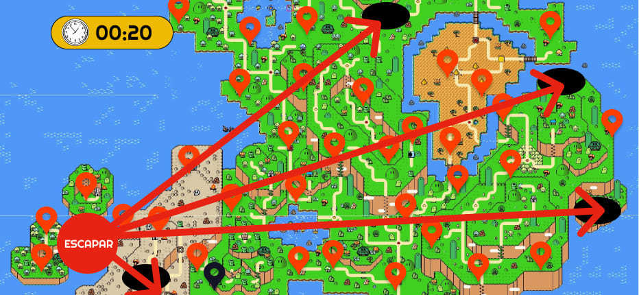
Al escapar, al usuario se le ofrecen
ubicaciones a las cuales puede moverse y que no
tienen mucha concurrencia de otros jugadores.
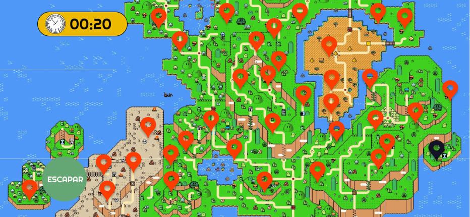
EL jugador es ubicado en su nueva posición
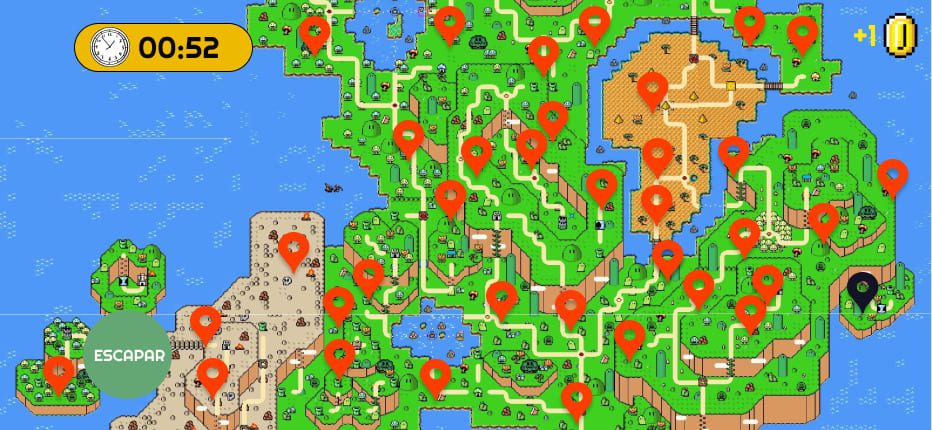
Una vez ubicado en su nueva posición, el
jugador puede volver a ganar puntos realizando
tap sobre los marcadores de color rojo.
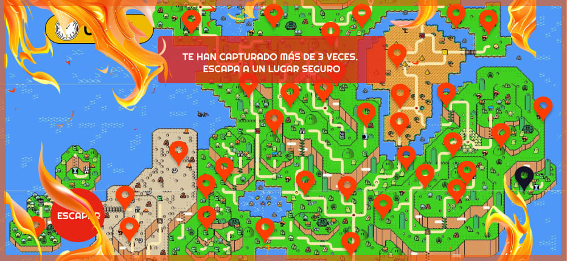
Cuando se recibe más de tres taps en contra, la
pantalla muestra bordes de color rojo para
alertar al jugador.
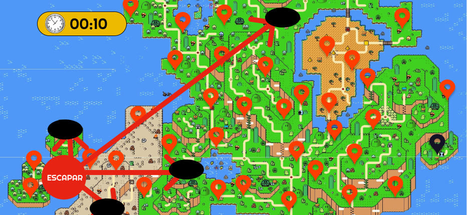
Al escapar, al usuario se le ofrecen
ubicaciones a las cuales puede moverse y que no
tienen mucha concurrencia de otros jugadores.
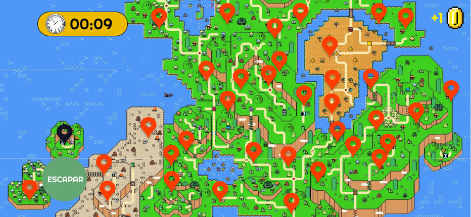
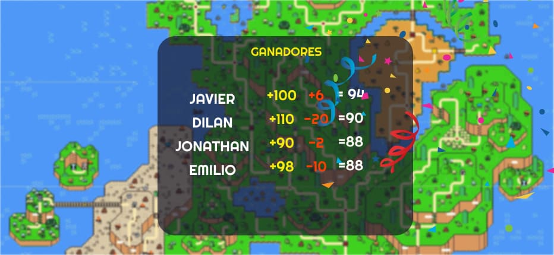
Una vez finalice el juego, se mostrará la tabla
de resultados con los detalles de puntos
ganados, perdidos y el total.
Cambios hechos
Se añaden marcos de color rojo para alertar al
jugador de que está siendo atacado muchas
veces.
Se quita la habitación de escape.
Ya no se cambia la ubicación del jugador de
manera aleatoria; ahora se permite que el
usuario escoja posibles opciones de escape.
Playtesting
Retroalimentación:
La mecánica del juego permite abusar al
realizar varios taps seguidos sobre un mismo
oponente de manera indefinida.
Durante el juego, no está claro cuáles son los
participantes con mayor puntaje, por lo que
sería conveniente resaltar su tamaño o color
para que sean objeto de una mayor cantidad de
ataques.
El boton escapar debe estar mejor pensado, ya
que se pierde con los colores del mapa.
La mecánica del juego sigue siendo confusa y no
se ve entretenida.
El factor estratégico no es alto, no se puede
afectar mucho las acciones de otras personas
por lo que uno hace.
Hasta el final del juego, nadie sabe quien es
quien.
Se debería detallar el tema de cómo se entrar a
las partidas
El escape de un lado al otro resulta ser algo
monótono
2. Laberinto encantado
Versión #1
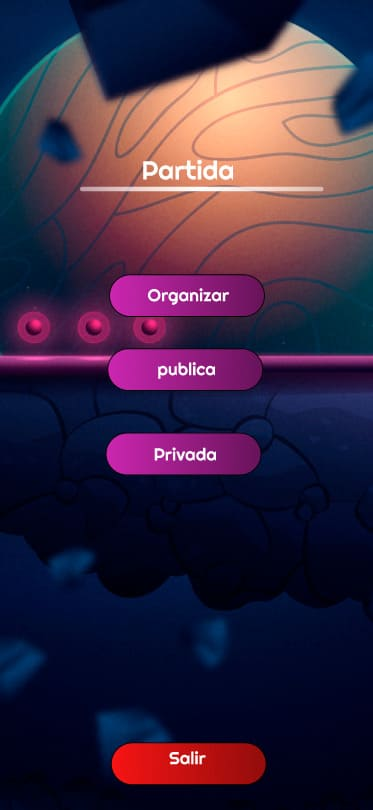
Pantalla de inicio del juego, donde incluye
opciones para crear y jugar una partida pública
y privada
Lista de espera de jugadores
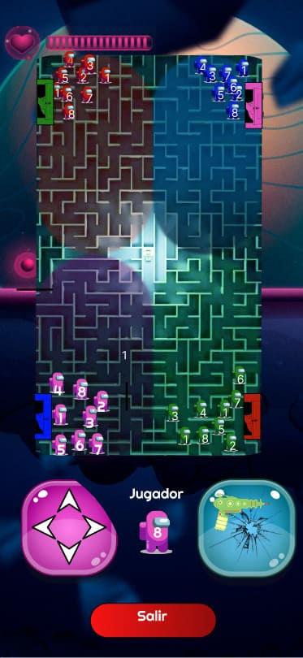
Inicia el juego, el objetivo del equipo es
salir por la puerta ubicada al otro extremo.
Con que uno llegue es suficiente para ganar.
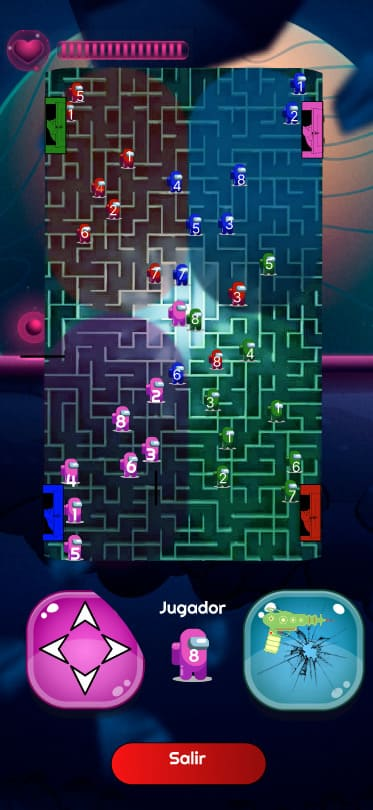
Los jugadores se mueven con las flechas
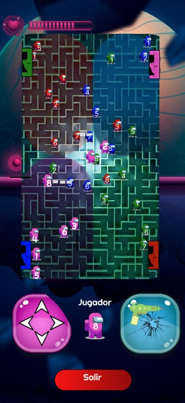
También tienen la posibilidad de atacar a los
rivales.
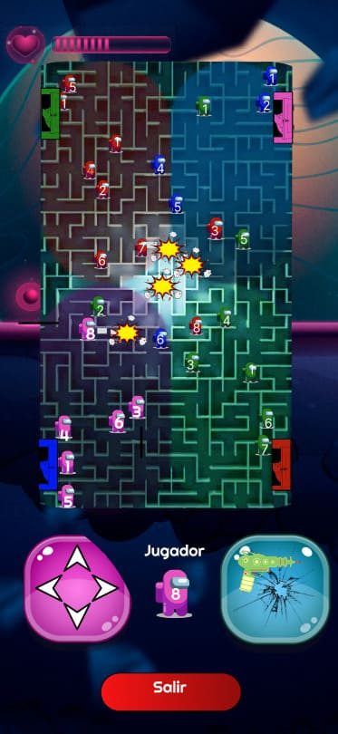
Un jugador es eliminado de la partida cuando
recibe una bala.
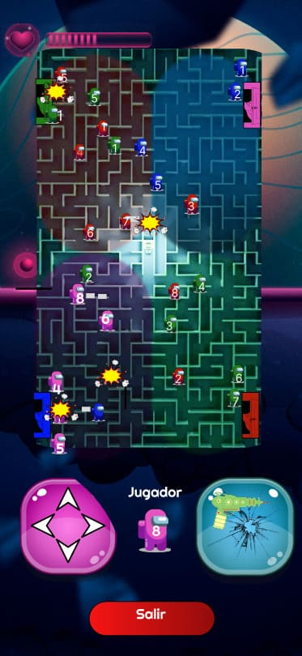
Los equipos pueden diseñar estrategias para
ganar dentro de 60 segundos.
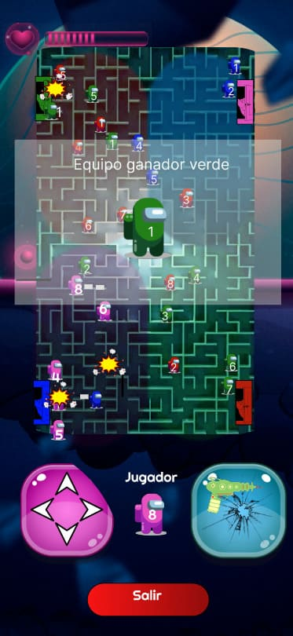
Si un jugador del equipo llega a la meta, el
equipo gana la partida.
Playtesting
Retroalimentación:
Sería bueno tener la opción de destruir,
reconstruir o crear nuevas paredes.
También podría ser interesante incluir armas
que se puedan lanzar, como granadas.
Hay tácticas y estrategias gracias a la visión
que se tiene de los otros jugadores, como
campear tu zona de aparición.
Es posible la creación de roles según qué
estrategia quiere usar un equipo. Ejemplo: uno
se queda en base, otro hace picking para ver si
puede matar a alguien, alguien que vaya con
cuidado, etc.
Es divertido ya que le da libertad a los
usuarios a crear sus propios roles y
estrategias.
Es interesante para la creación de estrategias
y tener cuidado de que te puedan disparar.
Corregir ortografía en la pantalla de inicio.
El botón de moverse con las flechas no es muy
óptimo, se presta a realizar movimientos
errónes. Se lo puede cambiar por un joystick.
El botón de ataque no es muy entendible,
visualmente no dice que es para atacar. Lo de
la pantalla quebrada da más dudas que certezas,
no se sabe si tiene un significado en sí.
Versión #2
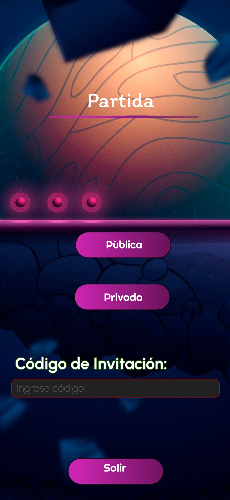
Pantalla de inicio del juego, donde incluye
opciones para crear y jugar una partida pública
y privada
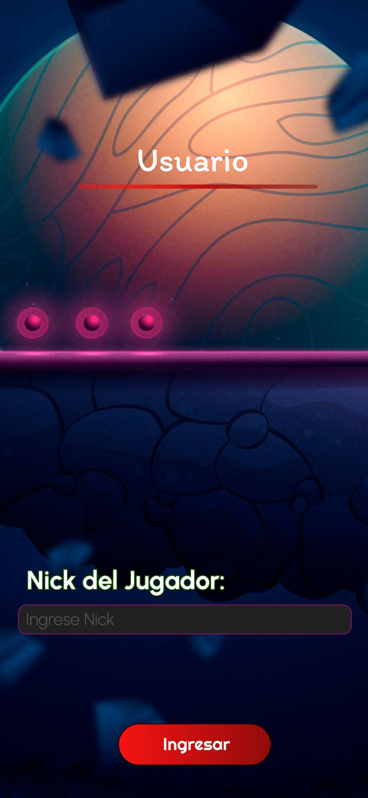
Ingreso de Nick.
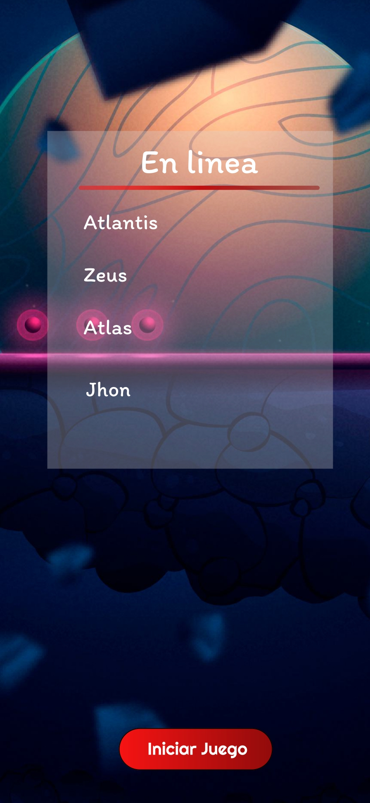
Lista de usuarios en linea esperando que inicie
la partida
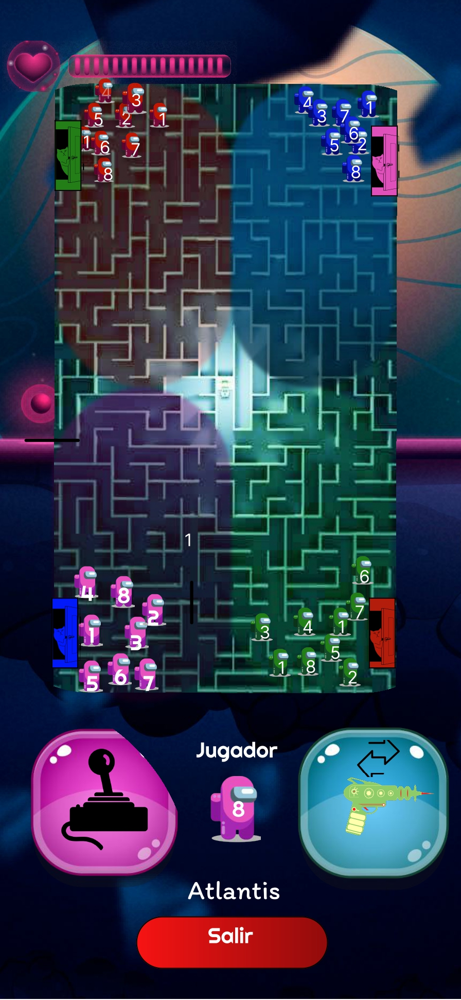
Inicia el juego, el objetivo del equipo es
salir por la puerta ubicada al otro extremo.
Con que uno llegue es suficiente para ganar.
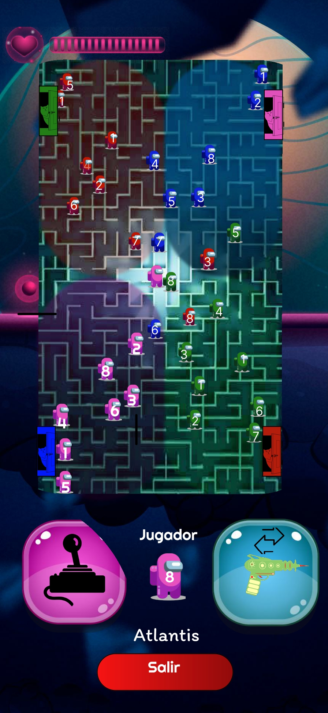
Se está utilizando un joystick para
mejor movilidad dentro del juego, además de un
botón deslizante con dos tipos de armas: granadas
y una de disparos.
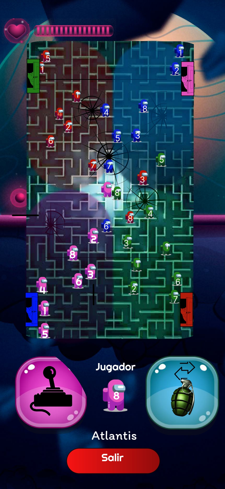
Un jugador es eliminado si recibe tres disparos
o le cae una granada. La explosión de la granada
tiene cierto radio de impacto; los jugadores que
se encuentren dentro del radio equivaldrían a un
disparo.
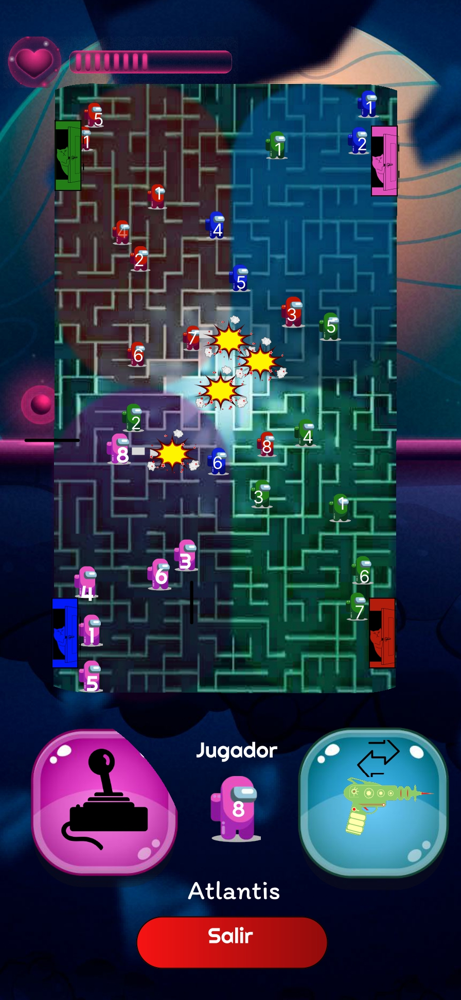
La eliminación de un jugador se vería como
una explosión que no daña a los demas jugadores.
Además, en este juego los equipos pueden diseñar
estrategias para ganar dentro de 60 segundos.
Si un jugador del equipo llega a la meta, el
equipo gana la partida.
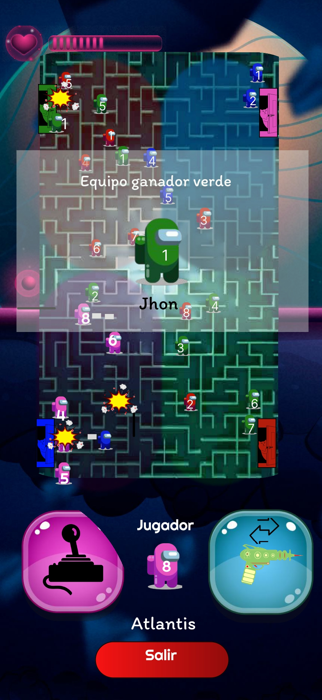
Si un jugador del equipo llega a la meta, el
equipo gana la partida.
Cambios hechos
Se incluyó un arma adicional: la granada.
Se incluyó un joystick
Se incluyó una entrada de código de invitación.
Se incluyó una entrada de nick.
Se incluyó una nueva regla respecto a
la utilización de granadas.
Playtesting
Retroalimentación:
Sería bueno tener la opción de destruir,
reconstruir o crear nuevas paredes.
También podría ser interesante incluir
más variedad de armas e ítems distribuidos
dentro del laberinto. Por ejemplo, un ítem de
escudo: si un jugador de un equipo agarra el ítem,
todos los jugadores tendrán la protección de
un escudo, que sería el equivalente de aguantar un
disparo adicional.
3. Defender el vecindario
Versión #1
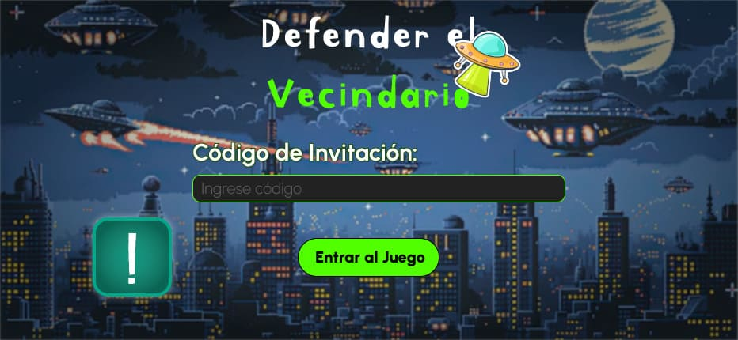
Pantalla de inicio del juego, donde se ingresa
el código de invitación del juego y el botón
para ingresar a la sesión.
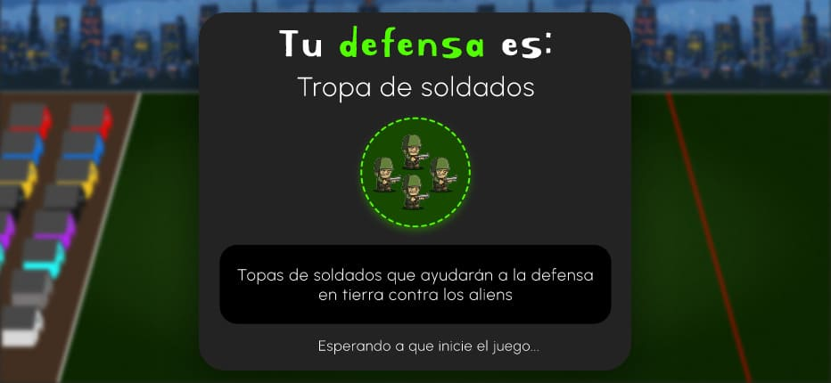
Pantalla donde se detalla el rol que va a
ejercer el jugador a lo largo del juego. Pueden
tocar los siguientes roles: Tropa de soldados,
muro de contención, torre antiovni y mina de
proximidad.
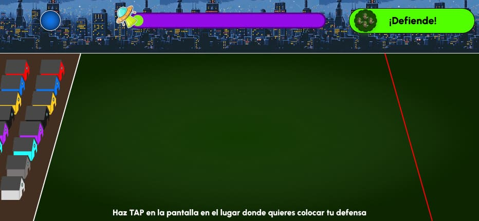
Empieza la partida con un contador de 3
segundos, luego con un minitutorial indicando
los controles básicos y las mecánicas del
juego. Haciendo TAP en la pantalla, se colocará
la defensa correspondiente en el lugar
indicado.
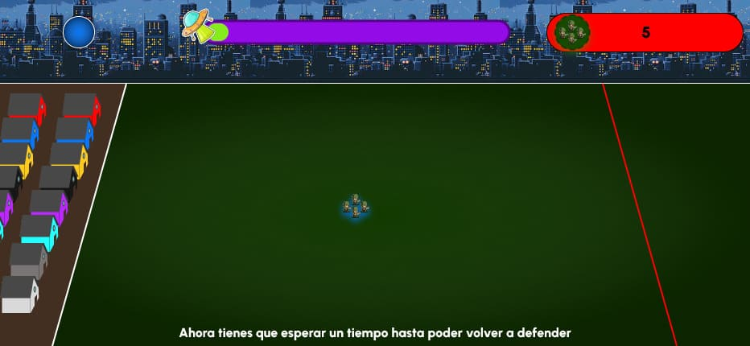
En la parte superior derecha, hay un timer que
indica el tiempo de espera para colocar la
defensa. Mientras que la parte superior muestra
el progreso de la invasión alien.
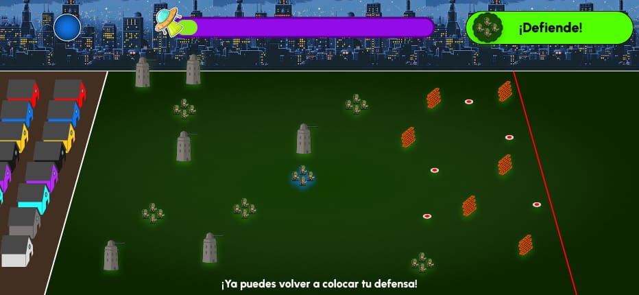
Cuando finaliza el timer, éste indicará que se
puede colocar una nueva defensa.
Las defensas pueden ser mezcladas, reforzando
así el bloque defensivo: las tropas se pueden
colocar encima de los muros de contención o en
las torres, haciendo que tengan una defensa a
tierra y aérea respectivamente.
Los aliens aparecerán a los 10 segundos de
inicio de la partida, y tendrán hasta 40
segundos para intentar llegar al vecindario.
Los aliens pueden atacar por tierra y por aire,
los cuales se dividen en: aliens (ataque por
tierra), ovni armado (ataque por aire) y ovni
invocador (invoca aliens en cualquier sitio del
mapa). Además, en la parte superior muestra el
progeso de la invasión.
Las defensas y los aliens solo pueden atacar un
objetivo a la vez. Adicional a ello, los ovnis
solo pueden atacar las estructuras (torres y
muros), mientras que las torres solo pueden
atacar a los ovnis. Las tropas solo atacan a
los aliens, mientras que los aliens son capaces
de atacar a las tropas y estructuras.
Se obtiene la victoria en equipo cuando la raid
alien finaliza, sobreviviendo al ataque y
salvando el vecindario de que sea abducido.
También se contempla el escenario de la
derrota, donde sí un alien/ovni toca el área
del vecindario, se le colocará encima una luz
violeta indicando que llegó.
Empieza una animación donde se muestra que se
abduce el vecindario entero.
Finalizada la abdución, las defensas
desaparecen.
Y por último, se muestra la pantalla de
derrota.
Playtesting
Retroalimentación:
Inicio de juego difícil de seguir para alguien
que desconoce del género.
Recomienda poner pantalla en el inicio donde
hable de todas las instrucciones y el objetivo
del juego.
La visual del juego es muy buena.
No existe una forma para crear una partida,
solo para unirse
No está claro si los otros campamentos juegan
junto a ti o si solo tienes que defenderlos.
A las personas entrevistadas les parece la idea
más interesante de las presentadas
La asignación de roles permite a los jugadores
a estar atentos de qué y cómo colocan los otros
sus defensas, lo cual puede llevar a
situaciones graciosas como la equivocación de
una persona con su tropa y el regaño de los
otros.
La mecánica de las mezclas de las defensas es
interesante, ya que da juego a más estrategia.
Podría haber un rol especial para el anfitrión
de la partida, y que sea quien guíe a todo el
equipo.
Versión #2
Pantalla de inicio del juego, donde se ingresa
el código de invitación del juego y el botón
para ingresar a la sesión. También está la
opción de crear una nueva partida y de poder
ver toda la información del juego (roles,
reglas y enemigos).
La pantalla de información indica el objetivo
del juego, además te permite ingresar a las
pantallas de roles, reglas y enemigos.
En los roles se detalla los roles que los
jugadores pueden tener en la partida, estos
son: tropa de soldados, muro de contención,
torre anti-ovni y mina de proximidad.
En controles y reglas, se detalla cómo se
coloca una defensa y las reglas a seguir en el
juego.
En enemigos, se detallan los tres enemigos
presentes en el juego.
El anfitrión tiene el control de la partida, el
juego genera un código de forma aleatoria y lo
puede compartir con otros jugadores. Además,
puede elegir libremente qué rol ejercer.
Pantalla donde se detalla el rol que va a
ejercer el jugador de forma aleatoria a lo
largo del juego. Pueden tocar los siguientes
roles: Tropa de soldados, muro de contención,
torre antiovni y mina de proximidad.
Empieza la partida con un contador de 3
segundos, luego con un minitutorial indicando
los controles básicos y las mecánicas del
juego. Haciendo TAP en la pantalla, se colocará
la defensa correspondiente en el lugar
indicado.
En la parte superior derecha, hay un timer que
indica el tiempo de espera para colocar la
defensa. Mientras que la parte superior muestra
el progreso de la invasión alien.
Cuando finaliza el timer, éste indicará que se
puede colocar una nueva defensa.
Las defensas pueden ser mezcladas, reforzando
así el bloque defensivo: las tropas se pueden
colocar encima de los muros de contención o en
las torres, haciendo que tengan una defensa a
tierra y aérea respectivamente.
Los aliens aparecerán a los 10 segundos de
inicio de la partida, y tendrán hasta 40
segundos para intentar llegar al vecindario.
Los aliens pueden atacar por tierra y por aire,
los cuales se dividen en: aliens (ataque por
tierra), ovni armado (ataque por aire) y ovni
invocador (invoca aliens en cualquier sitio del
mapa). Además, en la parte superior muestra el
progeso de la invasión.
Las defensas y los aliens solo pueden atacar un
objetivo a la vez. Adicional a ello, los ovnis
solo pueden atacar las estructuras (torres y
muros), mientras que las torres solo pueden
atacar a los ovnis. Las tropas solo atacan a
los aliens, mientras que los aliens son capaces
de atacar a las tropas y estructuras.
Se obtiene la victoria en equipo cuando la raid
alien finaliza, sobreviviendo al ataque y
salvando el vecindario de que sea abducido.
También se contempla el escenario de la
derrota, donde sí un alien/ovni toca el área
del vecindario, se le colocará encima una luz
violeta indicando que llegó.
Empieza una animación donde se muestra que se
abduce el vecindario entero.
Finalizada la abdución, las defensas
desaparecen.
Y por último, se muestra la pantalla de
derrota.
Cambios hechos
Añadido botón de información y creación de
partida en la pantalla inicial
Nueva pantalla donde se detalla el objetivo del
juego
3 nuevas pantallas que habla sobre los roles,
reglas y enemigos.
Pantalla de inicio del anfitrión.
Playtesting
Retroalimentación:
El rol de las minas puede llegar a ser
aburrido.
La palabra Roles no parece ser la más
óptima para describir a las defensas.
Puede ser posible que no se distinga una
diferencia clara entre el ovni armado y el ovni
invocador.
Colocar un indicador de daño de las tropas para
tener una mejor guía y una mejor preparación
para reforzar una zona. Este indicador puede
ser una barra ubicada en la parte superior de
una defensa que indique la vida de una defensa
o que se vea algo visual, por ejemplo que las
estructuras muestren una grieta, las tropas
sean menos.
La parte informativa está excelente su
implementación, ya que sirve como guía para los
jugadores principiantes además de informar bien
el objetivo del juego.
Desarrollo
Para empezar con el desarrollo del Juego, primero se realizó la elección de qué idea/prototipo se iba a realizar, tomando
en cuenta el tiempo de duración del desarrollo del juego, qué tan entretenido es para el público y que sea sencillo de
entender para todos. Por ello, se optó por elegir el juego de Laberinto Encantado.
Tecnologías
Para la creación del juego, hemos optado por el uso de las siguientes tecnologías:
Unity 2D: Para el desarrollo del juego, hemos optado por realizarlo con el famoso motor de
videojuegos Unity. Esto se decidió debido a su facilidad en el diseño de los niveles, implementación
de los objetos, texturas, sonidos en un juego y su adaptabilidad con otros sistemas.
Socket IO: Para la conexión de los jugadores al juego, además de implementar la lógica de la partida.
Photoshop e Illustrator: Para la creación/edición de las texturas presentes dentro del juego.
Unity Sprite Store: También usaremos la plataforma de Unity donde se puede descargar ya sea
de forma pagada o gratuita sprites como texturas, sonidos, paletas que pueden ser útiles para el proyecto.
GitHub: Para el guardado del juego en la nube, además para que sirva
como punto de enlace del equipo de trabajo.
Arquitectura del Sistema
Para el diseño de la arquitectura del sistema que tendrá el proyecto primero obtamos por la identificación de qué
componentes van a participar dentro de ella. Hay que tomar en cuenta varios aspectos con respecto al juego elegido,
tales como que es un juego cooperativo en equipo destinado a que lo jueguen varias personas, además de que debe estar
disponible para la mayoría de dispositivos como computadoras y celulares, que el acceso al juego sea rápido y que siempre
cuente con buen rendimiento.
Componentes Principales
Game Client (Frontend): Encargado de la renderización de las texturas, reproducción de audios y la captura de
los movimientos del jugador de forma local. Para este componente usaremos Unity.
Game Server (Backend): Es el servidor donde estará funcionando la lógica del juego, además de compunicar de forma
sincrónica lo que ocurre a todos los jugadores. Para el caso del proyecto, será el encargado de realizar la generación de los
niveles, conteo de kills y/o escapes de los equipos por la puerta correspondiente. Para este componente usaremos
Socket IO